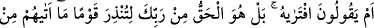
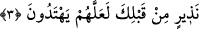

Bu âyetin dikkat çektiği husus, Kur’ân’ın âlemlerin Rabbi tarafından gönderilmiş
olduğudur. Kur’an sadece âlemlerin Rabbi tarafındandır, çünkü mu‘cizdir. Kureyş
Kur’ân’ın âlemlerin Rabbi tarafından indirilmiş olduğunu inkâr edince Allah Teâlâ
şöyle buyurdu:
3. “Onu Peygamber kendisi uydurdu” diyorlar öyle mi? Hayır! O, senden önce
kendilerine hiçbir uyarıcı (peygamber) gelmemiş bir kavmi uyarman için -doğru yolu
bulalar diye- Rabbinden gönderilen hak (Kitap) tır.
“Onu Peygamber kendisi uydurdu” Kur’ân’ı Muhammed uydurdu “diyorlar öyle
mi?” Onların bu sözü, bâtıl/geçersiz olduğunun son derece açık olmasından dolayı
kabul edilmez ve şaşılacak bir sözdür.
et-Te’vîlâtü’n-Necmiyye’de der ki: “Sevenlerin buluşması mümkün olmadığı zaman
sevenler için en değerli şey, birbirleriyle yazışmalarıdır.”
Sende ayrı düştüğüm günde senden gelen mektuptan bir zevk ve safâ ulaşır.
Kıyâmet gününde ibâdet ve tâatlerimizin yazılı olduğu mektup gelmezse, elden bir şey
gelmez.
Âlemlerin Rabbi, zâhir ehline okunması; onunla gaflet ehlinin uyarılması ve hizmet
ehlinin müjdelenmesi için âlemlerin ehline zâhirde bir kitap göndermiştir. Bâtın ehline
de bâtında bir kitap göndermiştir ki o kitabın nurlarıyla onların bâtınları aydınlansın,
sırlarıyla iç âlemleri süslensin. Kurbet ehli/Hakk’a yakın kılınanlar, O’ndan başkasına
iltifat etmemeleri ve O’ndan başkasıyla ünsiyet etmemeleri, aksi halde gayretullâhın
onları kurbetten/yakınlıktan uzaklaştıracağı konusunda uyarılsın. Muhabbet ehli de
rü’yetullah vaadinin yerine getirileceği, vuslat yaygısı üzerinde Hakk’a kavuşma,
vahdette fenâdan sonra bakâ hususunda o kitapla müjdelensin. Böylece onlar Hak ile,
Hak’tan ve Hak için konuşurlar. Onlara Rableri tarafından ihsan edilen hakikatlere dâir
onların sözlerini bâtıl ehli işittiği zaman gaflet ehli o sözlerin Allah tarafından olduğunu
inkâr ederler.
Şeyhin şeyhi gönül ehlinin esrârına ta’n etti.
Kişi devamlı olarak bilmediğinin düşmanıdır.
Sonra Allah Teâlâ bu konuyu bırakıp onların inkâr ettiği hususun hak olduğunun
açıklamasına geçerek şöyle buyurdu:
“Hayır!” Kâfirlerin dedikleri gibi değildir. Bilakis “O,” yâni Kur’ân “senden önce